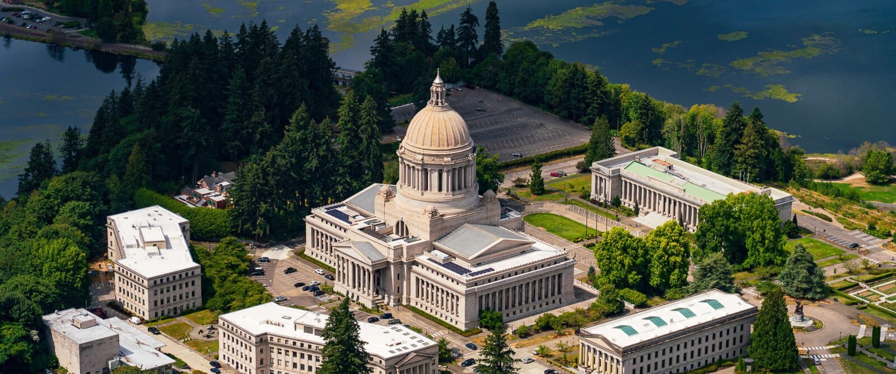
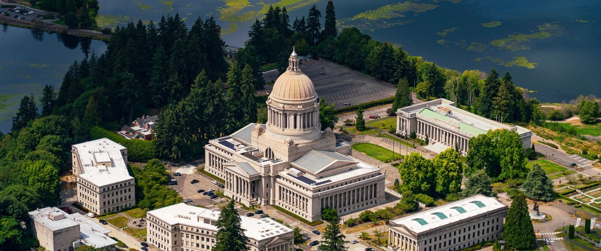
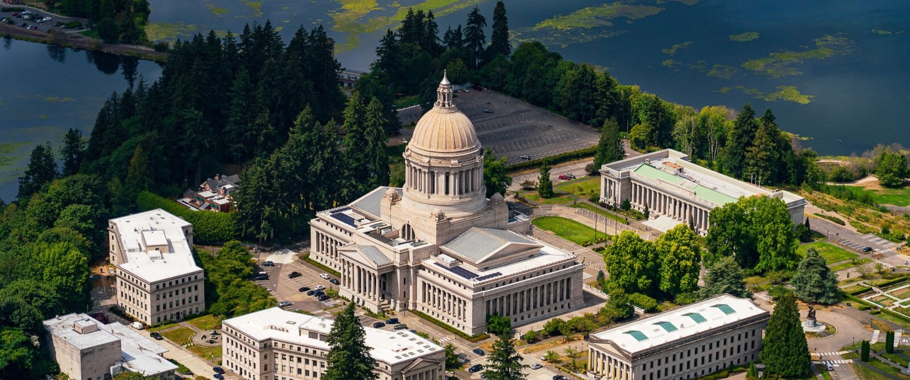
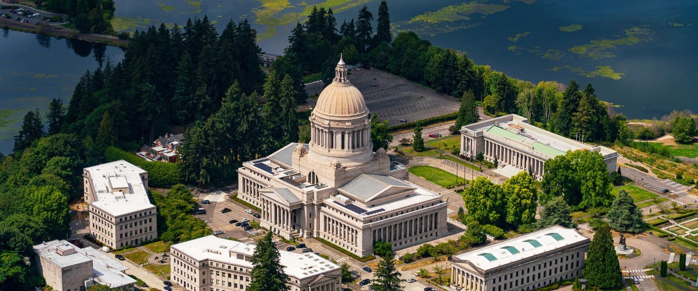

Olympia is the capital of Washington State. It has a vibrant art scene with murals on display, which makes it a great destination to enjoy long walks. You can find vintage stores, music venues, and art galleries spread across the city. Olympia also has a rich history from Native tribes, providing numerous hunting and fishing grounds. The city is one of the leading shipping ports for the nation.
| Fact | Detail |
|---|---|
| Population | 55,605 People |
| Incorporation | 1859 |
| Region | Southern Puget Sound |
| Classsification | Urban |
| Average Income | $73,851 |
| Compared to State Average | $91,306 |
Source: Olympia Tourism | Chiroolympia.com | Census.gov